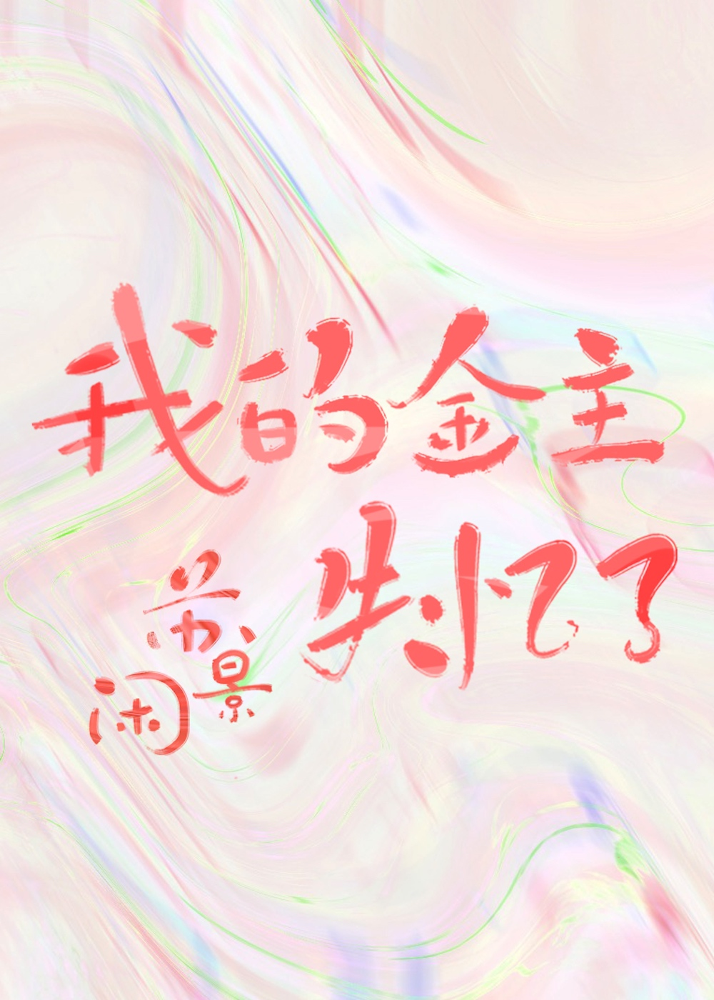

Se dice que cuando Gong Yue tuvo un accidente automovilístico, Ye Shanshan estaba filmando en las montañas y bosques profundos. Justo en ese momento, la paleta que tenía en la boca cayó al suelo. Ye Shanshan tomó la paleta y reflexionó en silencio: mi respaldo dorado... ¿se derrumbó?
Cuando Gong Yue se despertó, descubrió que había perdido sus recuerdos. Luego, vio un código que había dejado antes del accidente: no confíes en nadie más que en Ye Shanshan.